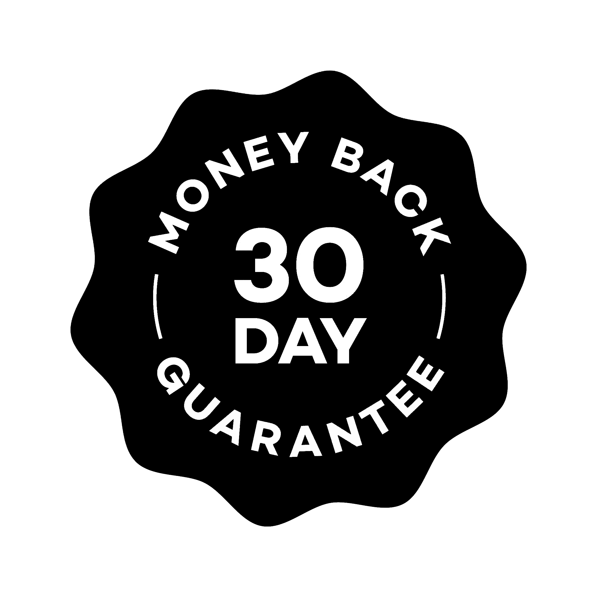

Made in a GMP-certified facility and purity-tested, SnoozeBrew gives you clean, trustworthy ingredients in every calming cup.
SnoozeBrew™ Magnesium Sleep Aid
When your nights improve, everything improves.
SnoozeBrew helps you unwind at night so you can fall asleep faster, sleep deeper, and wake up energized. Better nights lead to brighter, more balanced days.
- Helps you fall asleep faster and stay asleep longer
- Melatonin-free for a natural, non-groggy morning
- Calming blend of magnesium + soothing herbs
- Supports relaxation, stress relief, and deeper rest
- Crafted in a GMP-certified facility and purity-tested
- Supports restorative REM and slow-wave sleep
Low Stock! 45 people are looking at this52 people are looking at this

30-Day Money Back Guarantee
We’re confident SnoozeBrew will help you wind down easier, sleep deeper, and wake feeling more refreshed. But if it doesn’t become a nightly ritual you love, simply send it back within 30 days for a full refund — no questions asked.
SnoozeBrew combines bioavailable magnesium with calming herbs and adaptogens that help relax your body, quiet your mind, and support deeper, more restorative sleep — without melatonin or grogginess.
No. SnoozeBrew is melatonin-free and formulated to support your natural sleep cycle, so you wake up feeling clear, refreshed, and energized — not sluggish.
For best results, enjoy one scoop mixed with warm or cold milk/water about 30 minutes before bed to help your body shift into wind-down mode.
Yes. Our formula is designed for nightly use, made in a GMP-certified facility, and tested for purity and safety. It’s gentle, natural, and non-habit-forming.
Magnesium is essential for nervous-system regulation. Bioavailable forms support muscle relaxation, reduce stress-related tension, and assist with deeper, more restorative sleep cycles.
Sarah M. ✓ ★★★★★
“Best sleep I’ve had in months — and no groggy mornings. Love this stuff.” — Sarah M.